|
April 5, 2021 Does AI make financial markets more informative? Artificial Intelligence (AI) and the exponential growth of data is transforming the way investors value companies. The techno-optimist view is that AI-augmented investors have a greater ability to forecast corporate success and identify valuable companies. This makes stock prices more informative about companies' prospect, which, so the argument goes, is socially valuable because informative stock prices provide accurate signals for resource allocation. This virtuous effect of AI hinges on the assumption that AI has made financial markets more informative. But does this assumption hold true in reality? Read more »
February 5, 2021 How much money retail traders lose Zero-commission trading apps make trading accessible to everyone. As California-based brokerage firm Robinhood puts it, they are "on a mission to democratize finance for all." As their name indicate, zero-commission trading brokers do not charge any commission to their clients. If you're not paying, you're the product. Read more »
January 28, 2021 What is happening with GameStop The word "short squeeze" was once arcane stock-market jargon. It is everywhere in the news today. While the media are reporting on the intricacies of the short squeeze of the video game retailer GameStop and are speculating on the emergence of a flash mob vs Wall Street movement, in this article I explain simply how a short squeeze works. And if you wonder whether you should buy GameStop now, I offer my perspective on the question at the end of the article. Read more » 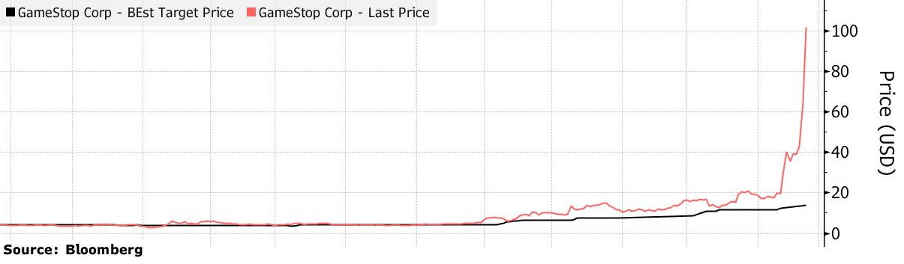
January 11, 2021 Belief formation in the stock market In the previous post, we uncovered that the stock market can be predicted to a certain extent. Namely, the price-earnings (P/E) ratio forecasts future stock market returns. When the P/E ratio is high—that is, when stock prices are high relative to companies' earnings—the stock market performs poorly on average over the next business cycle. Conversely, when the P/E ratio is low—when stocks are cheap relative to companies' earnings—the stock market tends to perform well in the medium run. The first interpretation of this pattern is that it is a symptom of inefficient markets. When investors are irrationally optimistic, stocks become over-priced and future returns are predictably low—to the surprise of the optimistic investors. The second interpretation is that, in good economic times risk is low, so investors are willing to hold stocks even if the risk premium is low. In other words, investors understand that investing when the P/E ratio is high delivers lower returns than investing when the P/E ratio is low, and they are fine with this. How to determine which interpretation is correct? Two researchers came up with a simple idea: ask investors! Read more » 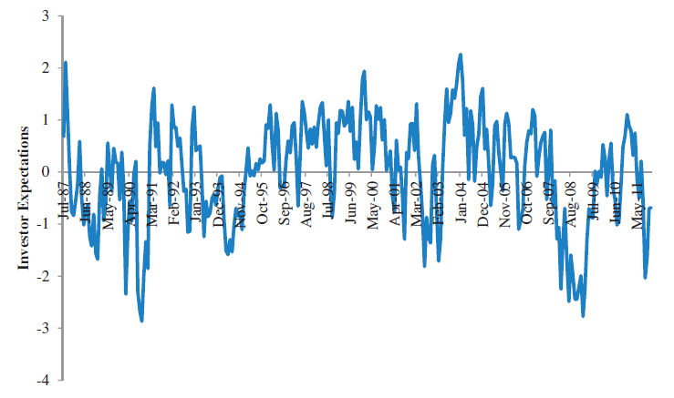
November 21, 2020 Is the stock market predictable? The efficient market hypothesis posits that companies' stock prices reflect fundamental values at all time. The implication of market efficiency is that stocks are never over-valued or under-valued and therefore it is never a particularly good time or a particularly bad time to buy stocks. According to the efficient market hypothesis, it is always business as usual. An early challenge to market efficiency came from American economist Robert J. Shiller. Shiller noticed that the stock market is not only volatile, it is also mean reverting. Mean reversion means that, when the stock market is at a high level at a given point in time, it tends to subsequently go down. Conversely, if the stock market is at a low level today, it tends to go up in the future. Read more » 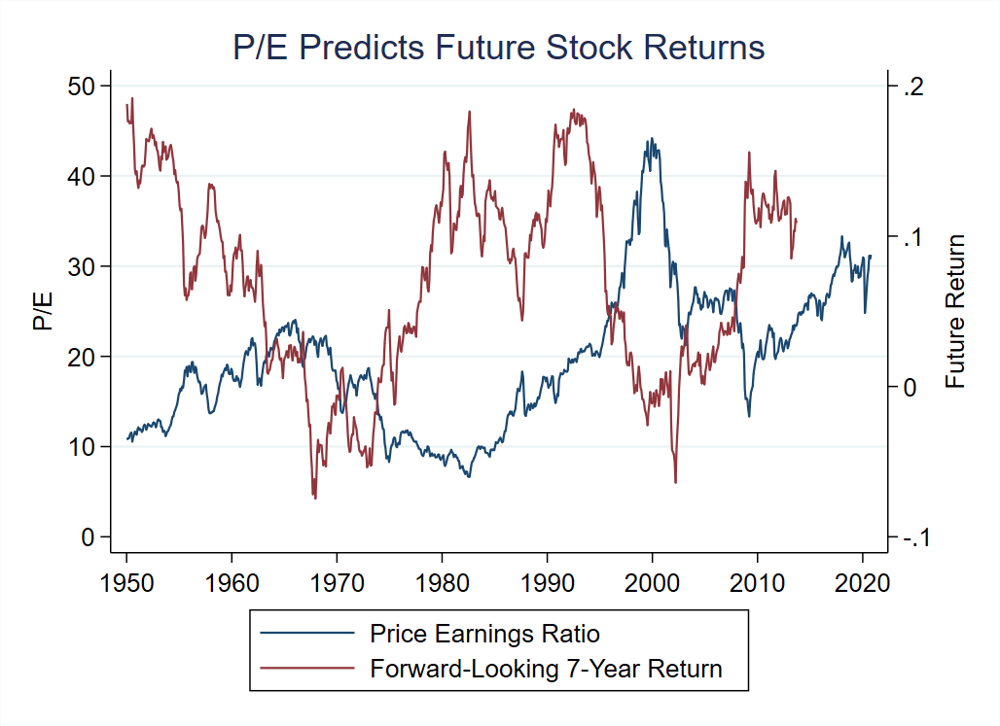
October 25, 2020 CAPM (mis)valuation in mergers and acquisitions We saw in the previous post that there is a discrepancy between CAPM-implied and actual stock returns. In other words, if you value a company using the discount rate implied by the CAPM, you obtain a different number than the market valuation. According to a recent survey of valuation professionals, most chief financial officers and investment bankers use the CAPM to value investment projects and companies. One important context in which the CAPM is commonly used is mergers and acquisitions. Read more » 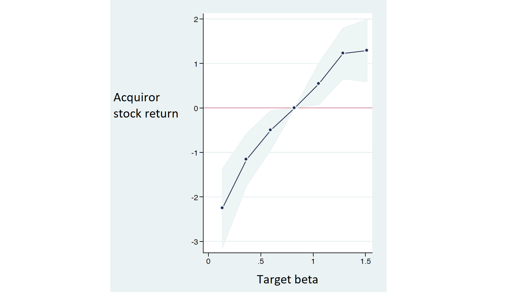
October 10, 2020 Is the CAPM fake news? Corporations and non-profit organizations constantly make capital budgeting decisions: whether to build a new infrastructure, develop a green technology, launch a new business line, or acquire a company. Making right capital budgeting decisions requires to assess correctly the value of the future benefits generated by each project. Because these benefits are usually uncertain, their value must be discounted for risk. The CAPM tells us how to do this risk adjustment. There are two important things to realize about the CAPM. Read more » 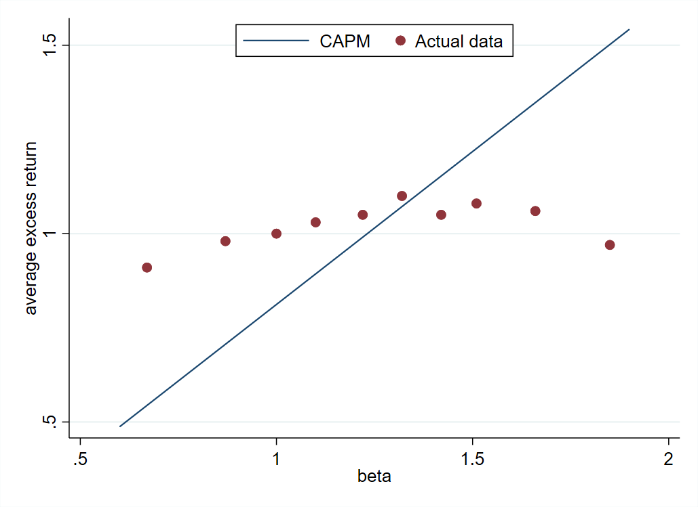
October 5, 2020 Should France privatize its airports? Aéroports de Paris which owns and manages Parisian international airports Charles de Gaulle and Orly is majority-owned by the French State. Last year the parliament voted a law that opens the door to the privatization of Aéroports de Paris. There is strong popular pushback against the privatization. An often-heard argument against privatization is that the State will sell the airports at a low price to private investors. This argument is misguided. Read more »
October 3, 2020 Should you buy stocks when young or old? One of the key insights of finance is that investors should invest in portfolios that contain the market portfolio of risky assets (such as stocks and corporate bonds) and the risk-free asset (government bonds). The share invested in risky assets should only depend on one's risk aversion. Therefore, people should invest a constant share of their wealth in stocks throughout their life (unless their risk aversion changes with age, but I am leaving this interesting question aside for today). One could be tempted to conclude that people should invest a constant share of their savings in stocks throughout their life. But this conclusion is not guaranteed because wealth is not the same as savings. An individual's wealth is made of her current savings as well as all the income she will earn throughout her life. Even if I have zero euros on my bank account, I am still rich of my future labor income! Read more »
September 29, 2020 Is the stock market over-exposed to the tech giants? The five tech giants (Apple, Microsoft, Amazon, Google, Facebook) account for 20% of the total US stock market capitalization. This fact leads some financial advisors to say that investors holding the market portfolio are poorly diversified, because they are over-exposed to the tech sector and a handful of tech companies (an example of this view here). Is this concern justified? Read more » 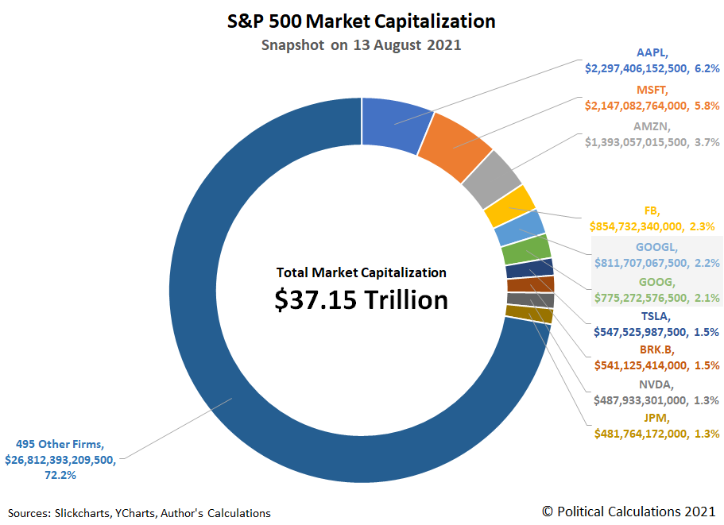
September 23, 2020 How to evaluate private equity funds: IRR v. NPV We learn in finance class that investments should be evaluated based on their Net Present Value. It turns out that many private equity funds instead use the Internal Rate of Return to advertise their performance. Did we learn something wrong in class? Or do private equity funds have a (good or bad) reason to communicate their internal rate of return?
September 17, 2020 Why interest rates don't go below zero — and why digital currencies can change it Central banks set the interest rate to influence investment decisions, raising the interest rate to moderate investment when the economy is booming and lowering the interest rate to boost investment when the economy is slowing down (see the previous post). But how low can the central bank set the interest rate?
September 14, 2020 How central banks influence the Net Present Value The job of central banks is to stabilize the business cycle, trying to prevent unemployment to rise during recessions and keeping inflation in check during expansions. To achieve these goals, the central bank sets the interest rate at which commercial banks borrow and lend money to each other. Because commercial banks are at the core of the financial system, the interbank rate determines the interest rates faced by businesses and households. The central bank therefore controls the interest rate in the economy. 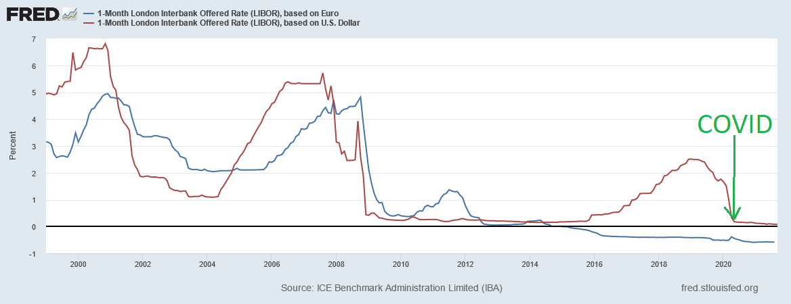
September 12, 2020 How to value green investments (and eat chocolate)? The first thing we learn in finance classes is how to value for-profit investments. An investment project is worth the present value of the cash flow it generates, which we calculate as expected cash flow discounted at the appropriate rate. Can we adapt the method for nonprofit investments whose output is not pecuniary but environmental or social? The answer is yes!
September 5, 2020 How to deal with the coming wave of corporate bankruptcies? Businesses have accumulated lots of debt since the beginning of the Covid-19 health and economic crisis. High corporate debt creates two sorts of issues. The first one is debt overhang that hinders corporate investment – see this post on debt overhang and public policies aimed at fixing it. The second issue is financial distress. Corporate bankruptcies are now rising around the world – see for instance Pandemic triggers wave of billion-dollar US bankruptcies in the Financial Times. In this post, we are going to see that lack of coordination between creditors can lead to inefficient decisions. 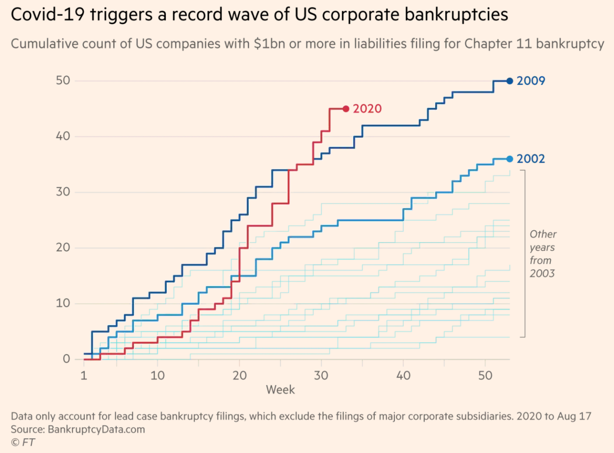
June 18, 2020 Covid increases debt owed to high-income people Businesses and governments come out of the lockdown with high levels of debt. This is a source of worries because high corporate debt can create debt overhang and hinder corporate investment (see this post) and high government debt can lead to sovereign debt crises. An aspect of the situation that is less discussed but crucial is where the debt is coming from. When a single country endures hard times, it often borrows from other countries. This logic does not apply to the Covid crisis because all countries were hit — we don't borrow from Martians (yet?). It must be that a group of people increased their savings during the crisis and lent money to other economic agents. Who is this group of people? 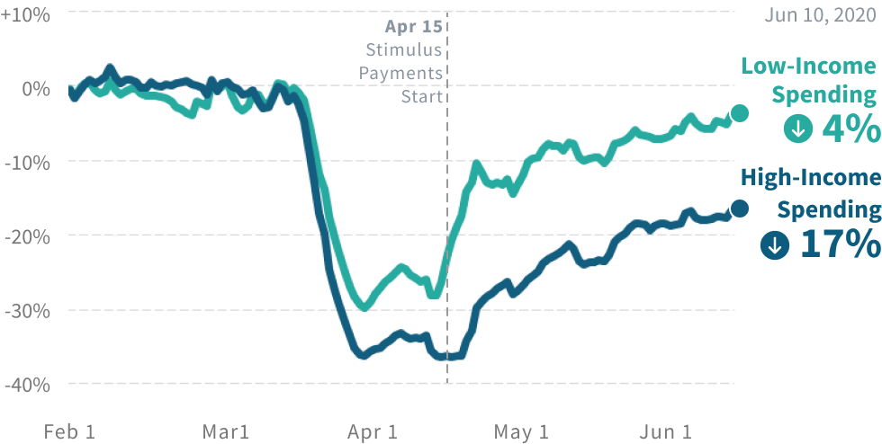
June 08, 2020 Should the EU issue perpetual bonds? The idea of issuing perpetual debt to combat the Covid crisis has recently been floated by prominent public figures such as hedge fund manager George Soros (The EU Should Issue Perpetual Bonds) and economist Luis Garicano and former Belgian Prime Minister Guy Verhofstadt (Toward a European Reconstruction Fund). A perpetual bond is a bond that pays an annual coupon forever and whose principal is never repaid. Conceptually, a perpetual bond is a coupon-paying bond with an infinite maturity. 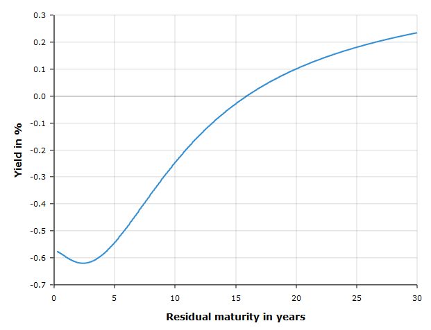The main argument for issuing perpetual bonds is that the EU should take advantage of the low-yield environment to lock in low interest rates by borrowing with infinite maturity.
June 5, 2020 May inflation risk be higher than suggested by the bond market? In the previous post we argued that bond prices point to expectations of low inflation. In the euro area, the difference between the yield on nominal bonds (subject to inflation risk) and the yield on inflation-indexed bonds (protected against inflation risk) is only 0.6%, which implies an expected inflation of 0.6% per year. In the US, the difference between the ten-year yield on nominal bonds (in blue on the figure below) and that on inflation-index bonds (in red) implies an expected inflation of 1.2% per year, which is also historically low. 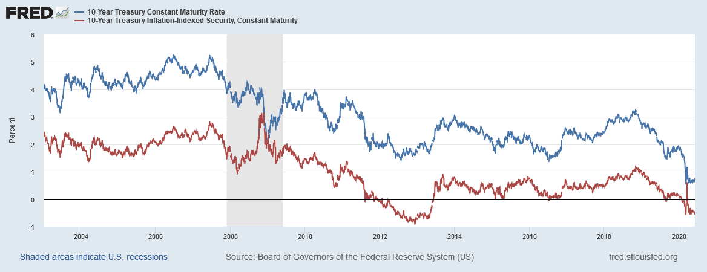Can these prices actually be misleading? This post reviews possible objections to the conclusion drawn from bond prices.
May 28, 2020 What does the bond market tell us about inflation risk? The fiscal response to the crisis is pushing public debt to very high levels. Concomittantly, central banks purchase massive amounts of public debt to keep interest rates low. In other words, central banks are effectively financing governments by creating money. Historically, government financing by money creation led to dramatic episodes of hyperinflation as is currently happening in Venezuela. Is there inflation risk today in Europe?
May 25, 2020 Is the stock market disconnected from the real economy? While unemployment is reaching levels not seen since the Great Depression and many small and large businesses are in dire financial situation, the stock market enjoyed very good returns over the past weeks. Is the stock market disconnected from the real economy? The disconnect is only apparent. Several factors explain why stock prices can increase even though economic conditions deteriorate. 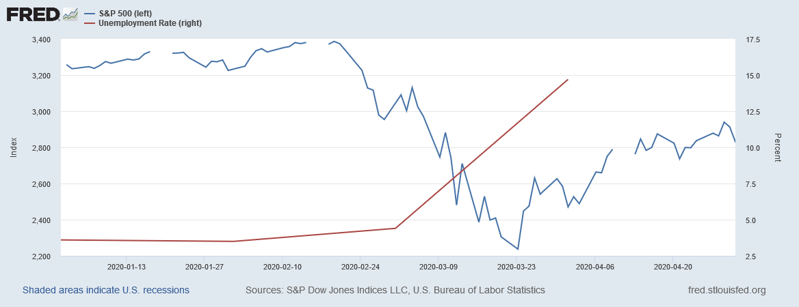
May 14, 2020 Can social objectives be financed by money creation? Final part There exist many proposals for financing the energy transition, medical research, anti-poverty programmes and other social objectives, by creating money. They often boil down to something like this. The government aims at funding expenses, say medical research for a coronavirus vaccine. Step 1: The government fund expenses by issuing debt. Step 2: The central bank purchases the government debt. The government never repays the debt.
May 13, 2020 Can social objectives be financed by money creation? Part 2: Central banks We showed in Part 1 that commercial banks create money. We considered a banking sector with balance sheet:
Let us now introduce the government and the central bank. The government wants to hire Carole as a school teacher and borrows money to pay for her wage, which is 20 euros. The government issues a bond, which is purchased by the bank. The government uses the money to pay Carole, who deposits her wage at the bank. The balance sheet of the banking sector is now:
May 12, 2020 Can social objectives be financed by money creation? Can states finance social objectives such as the energy transition, developing a coronavirus vaccine or reducing poverty, by creating money? We often hear proposals involving a combination of innovative debt instruments and central bank intervention to finance laudable objectives (see for instance Thomas Piketty on "green money" in LeMonde.fr). These proposals are usually criticized on the ground that they would lead to inflation and asset bubbles. Unfortunately, the debate is often arcane and sometimes based on misconceptions about money. My goal here is not to take a side, but to explain plainly how money creation works in practice. Part 1: Who creates money? 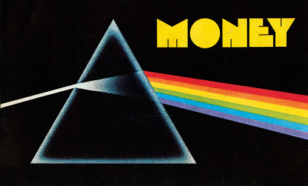
May 7, 2020 Debt overhang is looming: Is it curable? Many businesses are in financial troubles due to reduced economic activity caused by Covid. Governments are taking actions to help firms survive through these hard times ranging from tax holidays to government loans and credit guarantees. But when economic activity resumes, firms will emerge with high levels of debt accumulated during the crisis, leading to a well-known problem: debt overhang. What is debt overhang and how can it be cured?
May 3, 2020 Why central banks purchase risky debt Central banks massively intervened during the crisis. In particular, central banks engaged in large asset purchase programs (Federal Reserve enters new territory with support for risky debt, ECB predicted to beef up asset purchases with shift into junk bonds). What are these asset purchases and what are their goals? In a crisis, central banks seek to lower interest rates. The rationale is that lower interest rates induce companies to invest and households to consume. Lower interest rates also reduce the cost of government deficits and mitigate the risk of a sovereign debt crisis. Before seeing how central banks can affect interest rates, it is important to remember that interest rates have two components: Interest rate = Risk-free rate + Default premium 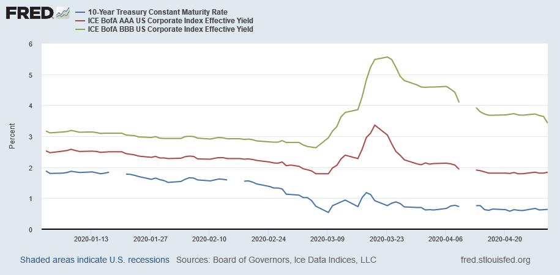
Why the equity risk premium has increased The stock market rebounded following fiscal and monetary policy announcements: it is now about 20% below its pre-crisis level. In the previous post, we saw that the expected fall in corporate earnings can account for only a fraction of the market decline. To explain the full market decline (even after the rebound), we must recognize that the equity risk premium has gone up. There exist three reasons why the equity risk premium has increased, which are summarized by the following formula: Equity risk premium = (Risk aversion) x (Macro risk) x (Sensitivity of earnings to macro risk)
Did the stock market over-react to Covid-19? In the previous post we saw that the Dividend Discount Model does a good job at explaining the level of stock prices before the Covid crisis. Today, we turn to the stock market crash caused by the coronavirus outbreak. After stock prices went down 30%, some commentators argued the market over-reacted. Let us review their arguments as well as counter-arguments using the Dividend Discount Model.
Were stock prices too high before Covid-19? The arrival of Covid-19 in Europe made stock markets crash. The two graphs below show that the S&P 500 (the US stock market index) and the EuroStoxx 50 (the European index) went down by about 30% after Northern Italy was quarantined at the end of February. Minus 30% sounds like a large drop, but was it too large: did the market over-react? Alternatively, were stock prices too high before the crisis and the crash a correction to more reasonable stock prices? In this post, we will use the tools learnt in Financial Markets to answer both questions, starting with the latter. 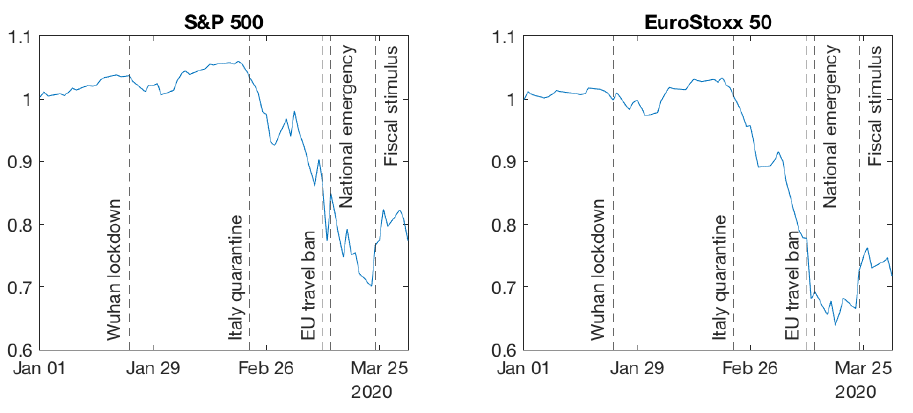
April 21, 2020 Why is the price of oil futures negative at short maturities? You probably heard that oil price is below zero for the first time in history. The screenshot below was sent to me by a student. The column "Last" shows the prices of futures oil contracts for several contract maturities. Remember that a futures contract calls for the delivery of the underlying asset (here: oil) at the maturity of the contract (May 2020, June 2020, etc.) 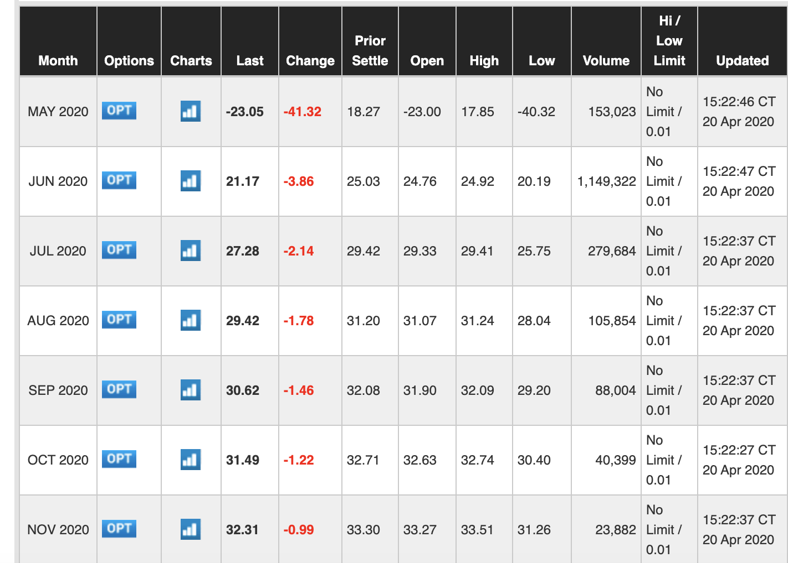The amazing fact is that the contract for delivery in May has a negative price. It means that sellers are paying buyers for taking oil off their hands in May! But notice this is only true at short maturities: the June contract has a positive price as one would normally expect. How can we explain this pattern using what we learnt in Financial Markets?
|
||||||||||